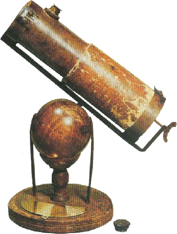

Isaac Newton (1642-1727) is an English physicist, philosopher, astronomer, and mathematician, considered one of the greatest scientists of all time. Newton formulated laws on universal gravitation and on moving bodies. These fundamental laws explain how objects move on land and in the air. He founded modern optics, studied the behavior of light, and built the first mirror telescope. His work in mathematics led him to the invention of a branch of mathematics called calculus (differential and integral calculus, also developed by the German mathematician Gottfried Wilhelm Leibniz). Newton has exhibited his ideas in several publications and two of them, Philosophiae Naturalis Principia Mathematica (Mathematical Principles of Natural Philosophy, 1687) and Opticks (Optical Treaty, 1704) are considered among the greatest scientific works ever done. Isaac Newton's revolutionary contributions helped to explain much of the world around us in mathematical terms, and made it possible to realize that science was also able to explain many other phenomena. Newton was able to formulate mathematical theories to explain known facts. He used his mathematical theories to predict the behavior of objects in various situations, and then compared his predictions with what he had observed in his experiments. Newton then used these results to verify, and modify, if necessary, his theories. He managed to make the explanation of physical properties a means of prediction! Newton began with the laws of motion and continued with the gravitation he had observed in nature. He later used these laws to transform physics into a general mathematical system of rules and laws. His experiments have made it possible to understand the phenomenon of light and colours, and are the basis of modern developments in the theory of light. Moreover, his invention of calculus has given science one of its most powerful tools.
Isaac Newton was born in Woolsthorpe, Lincolnshire, England. His father died before he was born. At the age of three, her mother remarried, and her maternal grandmother took charge of her education. He started school in nearby towns, then at ten he was sent to a high school near Grantham. During his studies, he lived with a pharmacist named Clark, who passed on his interest in chemistry. Young Newton seems to have been a quiet boy gifted with his hands. He made sundials, wind turbines, mechanical transport devices, and kites with lanterns attached to their tails. However, he was very inattentive in class (he said it later in life). In 1656, on the death of her second husband, Isaac Newton's mother returned to Woolsthorpe and removed her son from school in the hope of turning him into a farmer. Newton showed no farming skills, but legend has it one day been found under a hedge plunged into reflections instead of making the Grantham market. Heureusement, l’ancien professeur d’Isaac Newton à Grantham ayant remarqué les facultés intellectuelles du jeune garçon réussit à persuader la mère de Newton de lui permettre de le préparer à entrer à l’université de Cambridge. En juin 1661, le Trinity College de Cambridge accepta de faire entrer Newton en tant que subsizar (un étudiant qui au lieu de payer des droits d’inscription accomplissait des tâches domestiques pour le compte de l’établissement). Les matières qu’il étudia furent l’arithmétique, la géométrie, la trigonométrie, et, plus tard, l’astronomie et l’optique. Une grande partie de son inspiration semble avoir été insufflée par Isaac Barrow, un mathématicien et théologien de renom, alors professeur de mathématiques au collège. Barrow reconnut le génie en Newton et fit tout ce qu’il put pour le cultiver. Newton obtint son diplôme en janvier 1665.
Lorsqu’une épidémie de peste bubonique eut lieu en 1665, l’université de Cambridge ferma temporairement ses portes, et Newton retourna à Woolsthorpe. Il y resta presque deux ans. Ce fut une période intellectuellement riche pour Newton. Il profita de cette période pour travailler sur des sujets scientifiques qui lui tenaient à cœur, et qu’il allait explorer pour le reste de son existence : mouvement, optique, et mathématiques. On raconte qu’un jour, pour étudier les effets d’optique, le jeune newton s’enfonça une brindille de bois dans l’œil, pour observer les effets de la déformation rétinienne ! D’après Newton, c’est à cette période qu’il fit des progrès majeurs dans ce qu’il appela « La méthode des fluxions » (que nous appelons aujourd’hui calculus ou calcul différentiel et intégral).
Il fit également ses premières découvertes sur la gravitation, inspiré (selon la légende) par l’observation de la chute d’une pomme dans un verger. Selon une conversation rapportée par Newton dans ses vieux jours, il déclara qu’il tentait alors de déterminer quelle force était à l’origine du maintien de la Lune dans son orbite autour de la Terre. La chute d’une pomme l’amena à penser que la force d’attraction gravitationnelle agissant sur la pomme devait être la même que celle qui agissait sur la Lune. Newton croyait que cette force, bien qu’affaiblie par la distance, maintenait la Lune sur son orbite. Newton conçut une équation pour vérifier ses idées sur la gravitation. Cette équation s’appelle la loi en carré inverse, et elle indique que la force de gravité dépend du carré inverse de la distance entre deux objets. Newton pensait que cette loi pouvait également s’appliquer au Soleil et aux planètes. Il n’alla pas plus loin dans l’étude du problème de la pomme qui tombe, car il lui semblait trop complexe de calculer l’attraction engendrée par la Terre entière sur un si petit objet proche de sa surface. Il réintroduisit ces premières pensées des années plus tard dans son travail majeur, les Principia.
Newton commença également à s’interroger sur la nature de la lumière. La lumière blanche, selon la vision de son époque, était uniforme, homogène. Les premières expériences de Newton avec un prisme remirent cette idée de lumière blanche en question. En faisant passer un rayon de soleil à travers un prisme, il observa que le rayon de soleil se transformait en une bande de lumière colorée, appelée spectre. Alors que d’autres avaient sans doute mené des expériences similaires, Newton démontra que les différences de couleurs étaient causées par les divers degrés d’une propriété qu’il appela réfrangibilité. La réfrangibilité définit la possibilité aux rayons lumineux de se réfracter, ou se tordre sous l’effet d’une certaine matière. Par exemple, lorsqu’un rayon de lumière violet passe à travers un élément réfractant tel que du verre, il va se tordre de façon plus prononcée qu’un rayon de lumière rouge. Newton conclut au travers de ses expérimentations que la lumière du soleil constitue une combinaison de toutes les couleurs du spectre et que cette lumière se disperse lorsqu’elle passe à travers le prisme, car les couleurs qui la composent ont chacune une réfrangibilité différente. Cette propriété découverte par Newton dépend directement des longueurs d’onde émises par les composantes de la lumière du soleil. Un réfracteur tel qu’un prisme tord chaque longueur d’onde de lumière dans des proportions différentes.
En octobre 1667, peu après son retour à Cambridge, Isaac Newton fut élu membre du Trinity College, puis nommé Master of Arts. Durant cette période, il consacra la plupart de son temps à effectuer des travaux sur l’optique. Ses expériences avec le prisme lui permirent de comprendre que la résolution d’un télescope est moins limitée par la difficulté de concevoir des lentilles parfaites que par les différences de réfraction entre les différents rayons de couleurs.
Newton observa que les lentilles réfractent ou tordent les rayons lumineux de manière légèrement différente selon leur couleur. Il entreprit alors de construire un télescope réflecteur, c’est-à-dire un télescope qui utilise des miroirs plutôt que des lentilles. Les miroirs réfléchissent toutes les couleurs à puissance égale. Le mathématicien écossais James Grégory avait eu l’idée d’un télescope réflecteur en 1663, mais Isaac Newton fut le premier à en construire un. Il fabriqua un réflecteur avec un miroir de 3.3 cm en 1668. Ce télescope avait un facteur de grossissement d’environ 40, et différait légèrement de celui imaginé par J. Gregory. Trois ans plus tard, la Royal Society, association officielle des savants et mathématiciens, invita Newton à lui prêter son télescope pour étude. Il envoya un télescope identique à l’original, et la société reconnut la suprématie de Newton en publiant une fiche technique de l’instrument.
Télescope de Newton, Londres, Royal Society. Les deux premiers télescopes construits par Isaac Newton n'ont pas survécu. Cependant, on pense que des parties d'un troisième instrument qu'il a construit au cours de l'hiver 1671-1672 ont été réutilisées dans un télescope présenté en 1766 à la Royal Society, où il se trouve encore aujourd'hui. Auteur de l'image inconnu.
En 1669, Isaac Newton donna à Isaac Barrow, son professeur de mathématiques de Trinity, un important manuscrit, généralement connu sous son appellation latine, De Analysi. Ce document contenait un grand nombre de conclusions tirées par Newton au sujet du calcul intégral et différentiel (ce que Newton appelait sa « méthode des fluxions »).
Bien que ce manuscrit ne fut pas immédiatement publié, Barrow en fit connaître les résultats à un grand nombre de savants mathématiciens d’Angleterre et d’Europe. Ce document fit de Newton l’un des plus grands mathématiciens de son époque, ainsi que le fondateur du calcul intégral et différentiel (avec Leibniz). Le calcul intégral et différentiel ouvre des concepts tels que le taux de changement de quantité, l’inclinaison des courbes sur un point donné, le calcul de valeurs minimales et maximales dans les fonctions, et le calcul de superficies comportant des courbes. Lorsque Barrow prit sa retraite en 1669, il suggéra au collège que Newton devrait être son successeur. Newton devint le nouveau professeur de mathématiques et choisit l’optique comme premier sujet de ses cours.
Début 1672, Newton fut élu membre de la Royal Society. Peu de temps après, Newton soumit un document détaillant sa découverte au sujet de la nature de la lumière blanche.
Très impressionnée par son compte-rendu, la Society publia le document. Cependant, cette publication attira les foudres d’un grand nombre de scientifiques européens, qui contredisaient les idées de Newton. La plupart de ces critiques furent plus tard démontées. La plus grande controverse à l’égard du travail de Newton concernait ses travaux sur la théorie de la gravitation et provenait de l’inventeur anglais Robert Hooke. Hooke déclara que Newton lui avait volé ses lois fondamentales sur la gravitation. Au début, Newton répondit à ces critiques avec calme et retenue, mais au fur et à mesure, son irritation à ce sujet se montrait grandissante. Au fur et à mesure qu’elles continuaient, l’irritation de Newton augmenta, sa sensibilité s’en trouva atteinte et il finit par ne plus publier ses travaux pendant des années.
Vers 1679, Newton se remit à étudier le phénomène des orbites planétaires. L’idée d’une attraction planétaire basée sur le carré inverse de la distance entre le Soleil et les planètes (qu’il avait calculé beaucoup plus tôt, à Woolsthorpe) fut à l’origine d’un grand débat au sein de la communauté scientifique. Cette loi sur l’attraction fait suite, pour le cas simple d’une orbite circulaire, à la troisième loi de l’astronome allemand Johannes Kepler, qui considère que le temps de révolution d’une planète autour du Soleil dépend de la taille de l’orbite de la planète. La loi sur l’attraction prend également en compte l’accélération centripète d’un corps en mouvement autour d’un cercle, établie par l’astronome danois Christiaan Huygens en 1673. Le problème pour déterminer l’orbite à partir d’une loi sur la force avait déconcerté tout le monde avant Newton, qui trouva la solution vers 1680.
En août 1684, l’astronome anglais Edmond Halley se rendit à Cambridge pour discuter avec Newton du problème des orbites. Lors d’une conversation avec Halley sur la forme d’une orbite dans la loi du carré inverse de l’attraction, Newton suggéra que cela pouvait être une ellipse. Incapable de trouver le calcul qui l’avait amené à cette affirmation, Newton promit de l’envoyer à Halley, ce qu’il fit quelques mois plus tard. Lors d’une seconde visite, Halley reçut ce qu’il appela « un curieux traité de motu » (de motu signifie « en mouvement »), qui à la demande de Halley fut enregistré à la Royal Society en février 1685. Ce document sur les lois du mouvement forma la base du premier livre intitulé Philosophiae Naturalis Principia Mathematica. Les savants et scientifiques considèrent ce livre comme une œuvre majeure, et sa rédaction en l’espace de 18 mois fut un exploit intellectuel sans précédent à l’époque. Halley joua un rôle considérable dans le développement de Principia. Il usa de tact et de diplomatie concernant les différends qui opposaient Newton et Hooke, qui pensait que Newton lui avait volé des idées. Newton décida avec colère de supprimer la troisième section de son travail, mais Halley le persuada de le publier. Halley prit en charge la gestion de la publication du travail de Newton.

Portrait d'Edmond Halley peint par Thomas Murray en 1687 Image Wikipédia
 CELEBRITY
CELEBRITY